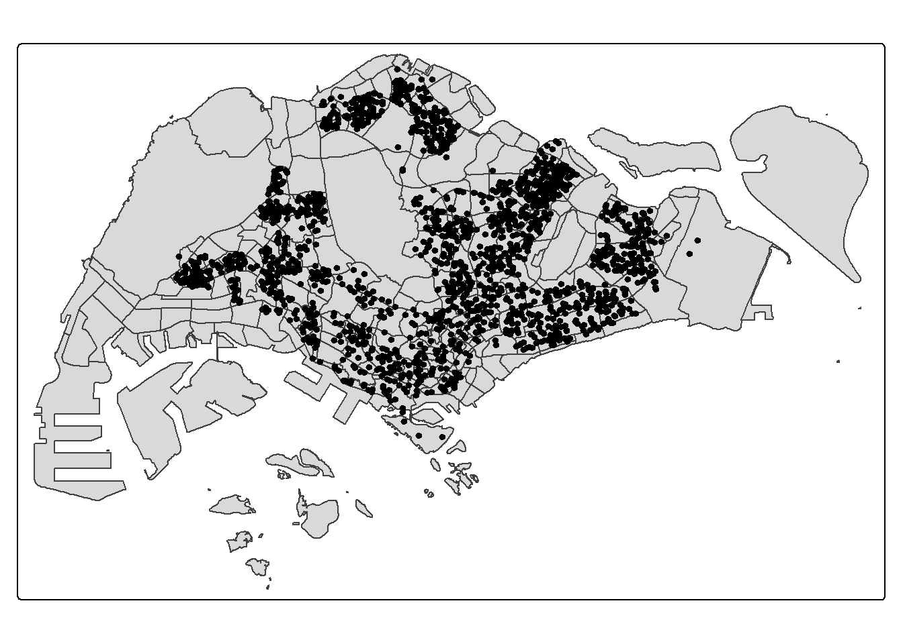
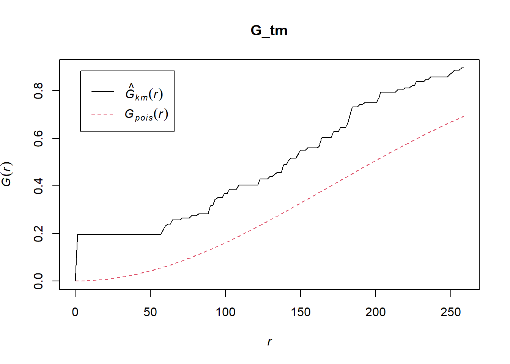
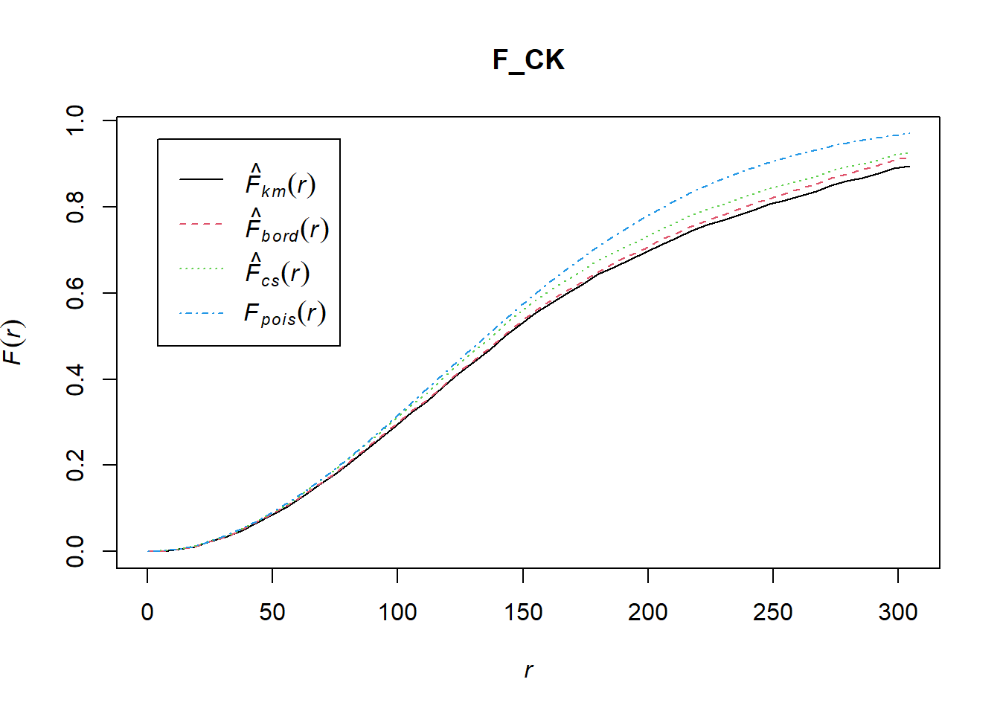
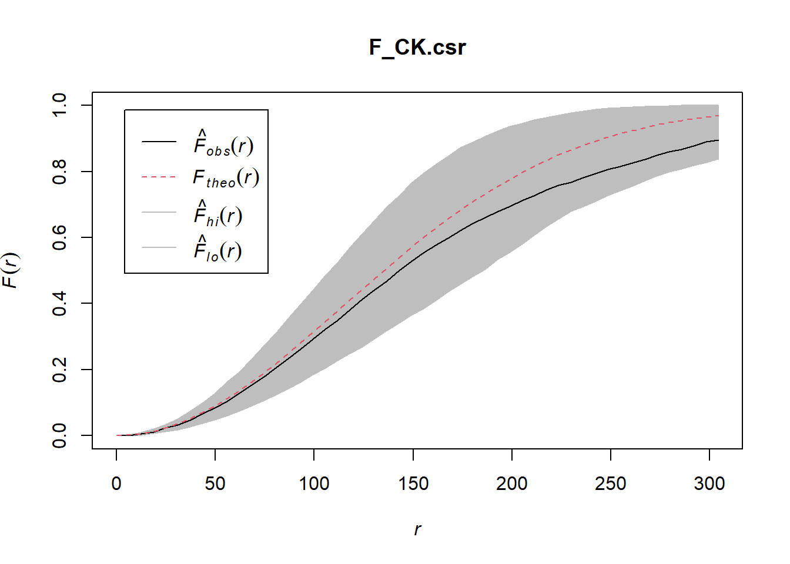
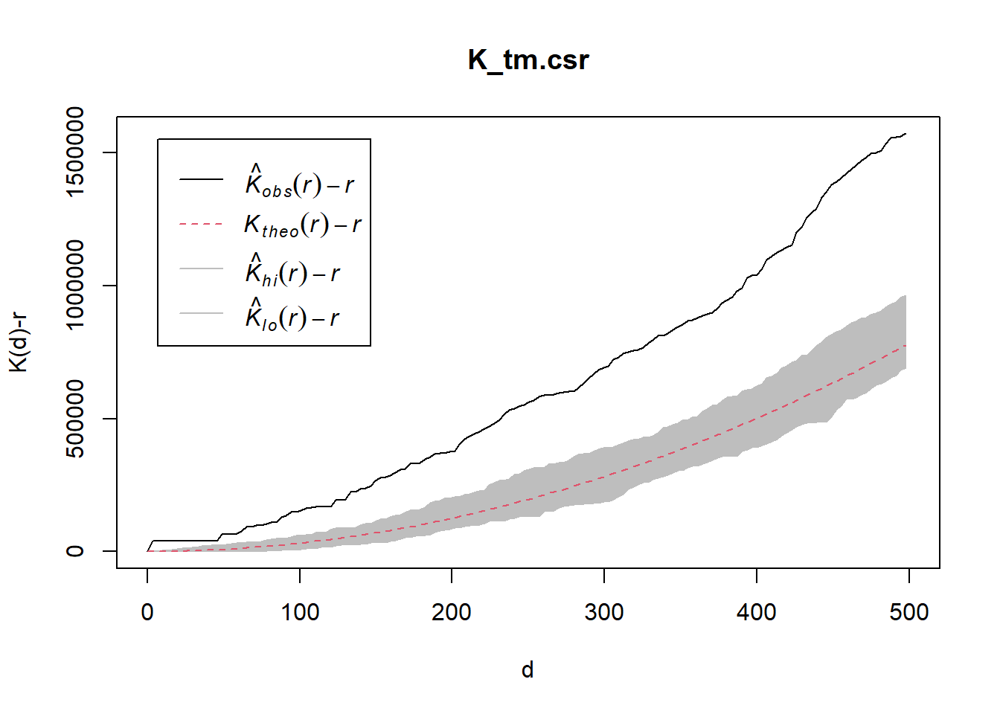
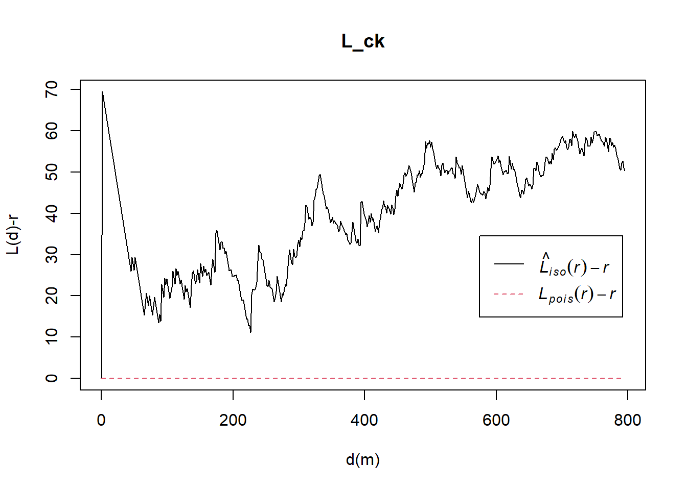
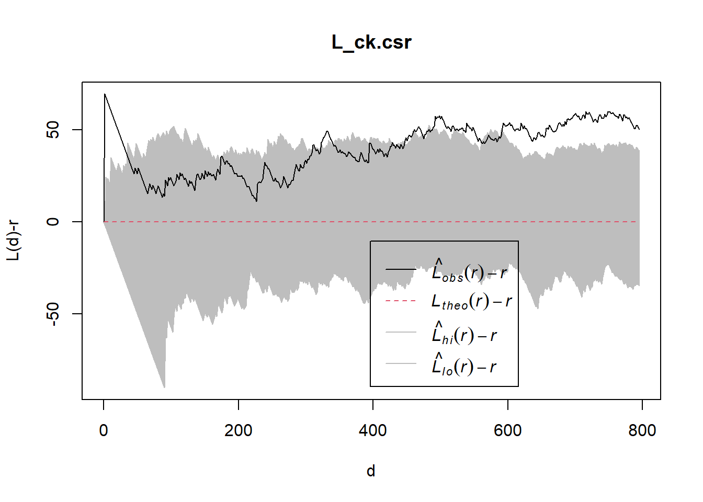
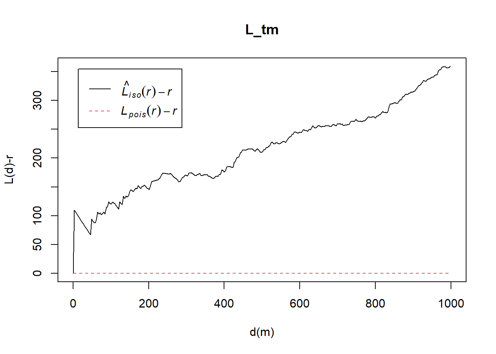
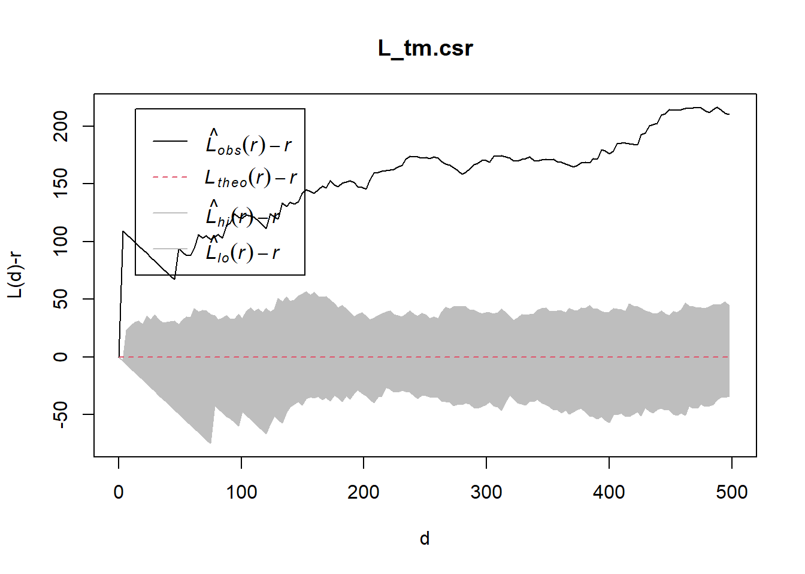

pacman::p_load(sf, spatstat, tmap, tidyverse, rvest)Hands-on Excercise 2b
5 2nd Order Spatial Point Patterns Analysis Methods
investigating clustering, dispersion, or randomness at various spatial scales.
The specific questions we would like to answer are as follows:
are the childcare centres in Singapore randomly distributed throughout the country?
if the answer is not, then the next logical question is where are the locations with higher concentration of childcare centres?
Loading Data
mpsz_sf <- st_read("data/MasterPlan2019SubzoneBoundaryNoSeaKML.kml") %>%
st_zm(drop = TRUE, what = "ZM") %>% st_transform(crs = 3414)Reading layer `URA_MP19_SUBZONE_NO_SEA_PL' from data source
`C:\farhanlion\ISS626\Hands-on-Ex\Hands-on_Ex02\data\MasterPlan2019SubzoneBoundaryNoSeaKML.kml'
using driver `KML'
Simple feature collection with 332 features and 2 fields
Geometry type: MULTIPOLYGON
Dimension: XY
Bounding box: xmin: 103.6057 ymin: 1.158699 xmax: 104.0885 ymax: 1.470775
Geodetic CRS: WGS 84Next, build a function called extract_kml_field for extracting REGION_N, PLN_AREA_N, SUBZONE_N, SUBZONE_C from Description field by using the code chunk below.
extract_kml_field <- function(html_text, field_name) {
if (is.na(html_text) || html_text == "") return(NA_character_)
page <- read_html(html_text)
rows <- page %>% html_elements("tr")
value <- rows %>%
keep(~ html_text2(html_element(.x, "th")) == field_name) %>%
html_element("td") %>%
html_text2()
if (length(value) == 0) NA_character_ else value
}mpsz_sf <- mpsz_sf %>%
mutate(
REGION_N = map_chr(Description, extract_kml_field, "REGION_N"),
PLN_AREA_N = map_chr(Description, extract_kml_field, "PLN_AREA_N"),
SUBZONE_N = map_chr(Description, extract_kml_field, "SUBZONE_N"),
SUBZONE_C = map_chr(Description, extract_kml_field, "SUBZONE_C")
) %>%
select(-Name, -Description) %>%
relocate(geometry, .after = last_col())mpsz_cl <- mpsz_sf %>% filter(SUBZONE_N != "SOUTHERN GROUP", PLN_AREA_N != "WESTERN ISLANDS", PLN_AREA_N != "NORTH-EASTERN ISLANDS")write_rds(mpsz_cl,
"data/mpsz_cl.rds")Next, code chunk below will be used to import the childcare Service data downloaded from data.gov.sg into R environment as sf data frame called chilcare_sf.
childcare_sf <- st_read("data/ChildCareServices.kml") %>%
st_zm(drop = TRUE, what = "ZM") %>%
st_transform(crs = 3414)Reading layer `CHILDCARE' from data source
`C:\farhanlion\ISS626\Hands-on-Ex\Hands-on_Ex02\data\ChildCareServices.kml'
using driver `KML'
Simple feature collection with 1925 features and 2 fields
Geometry type: POINT
Dimension: XYZ
Bounding box: xmin: 103.6878 ymin: 1.247759 xmax: 103.9897 ymax: 1.462134
z_range: zmin: 0 zmax: 0
Geodetic CRS: WGS 84Plotting
tm_shape(mpsz_sf) +
tm_polygons() +
tm_shape(childcare_sf) +
tm_dots()
5.6.1 Choa Chu Kang planning area
The G-function describes the distribution of distances from each event to its nearest neighboring event. In this section, you will learn how to:
Estimate the G-function using the
Gest()function in the spatstat package.Carry out a Monte Carlo simulation test with the
envelope()function in spatstat to assess whether the observed pattern differs from complete spatial randomness.
5.6.1.1 Computing G-function estimation
ck <- mpsz_cl %>%
filter(PLN_AREA_N == "CHOA CHU KANG")
ck_owin = as.owin(ck)
childcare_sf <- st_read("data/ChildCareServices.kml") %>%
st_zm(drop = TRUE, what = "ZM") %>%
st_transform(crs = 3414)Reading layer `CHILDCARE' from data source
`C:\farhanlion\ISS626\Hands-on-Ex\Hands-on_Ex02\data\ChildCareServices.kml'
using driver `KML'
Simple feature collection with 1925 features and 2 fields
Geometry type: POINT
Dimension: XYZ
Bounding box: xmin: 103.6878 ymin: 1.247759 xmax: 103.9897 ymax: 1.462134
z_range: zmin: 0 zmax: 0
Geodetic CRS: WGS 84childcare_ppp <- as.ppp(childcare_sf)
childcare_ck_ppp = childcare_ppp[ck_owin]
tm <- mpsz_cl %>%
filter(PLN_AREA_N == "TAMPINES")
tm_owin = as.owin(tm)
childcare_tm_ppp = childcare_ppp[tm_owin]set.seed(1234)G_CK = Gest(childcare_ck_ppp, correction = "border")
plot(G_CK, xlim=c(0,500))
5.6.1.2 Performing Complete Spatial Randomness Test
To confirm the observed spatial patterns above, a hypothesis test will be conducted. The hypothesis and test are as follows:
Ho = The distribution of childcare services at Choa Chu Kang are randomly distributed.
H1= The distribution of childcare services at Choa Chu Kang are not randomly distributed.
The null hypothesis will be rejected if p-value is smaller than alpha value of 0.001.
Monte Carlo test with G-fucntion
G_CK.csr <- envelope(childcare_ck_ppp, Gest, nsim = 999)Generating 999 simulations of CSR ...
1, 2, 3, ......10.........20.........30.........40.........50.........60..
.......70.........80.........90.........100.........110.........120.........130
.........140.........150.........160.........170.........180.........190........
.200.........210.........220.........230.........240.........250.........260......
...270.........280.........290.........300.........310.........320.........330....
.....340.........350.........360.........370.........380.........390.........400..
.......410.........420.........430.........440.........450.........460.........470
.........480.........490.........500.........510.........520.........530........
.540.........550.........560.........570.........580.........590.........600......
...610.........620.........630.........640.........650.........660.........670....
.....680.........690.........700.........710.........720.........730.........740..
.......750.........760.........770.........780.........790.........800.........810
.........820.........830.........840.........850.........860.........870........
.880.........890.........900.........910.........920.........930.........940......
...950.........960.........970.........980.........990........
999.
Done.plot(G_CK.csr)
5.6.2 Tampines planning area
5.6.2.1 Computing G-function estimation
G_tm = Gest(childcare_tm_ppp, correction = "best")
plot(G_tm)
5.6.2.2 Performing Complete Spatial Randomness Test
To confirm the observed spatial patterns above, a hypothesis test will be conducted. The hypothesis and test are as follows:
Ho = The distribution of childcare services at Tampines are randomly distributed.
H1= The distribution of childcare services at Tampines are not randomly distributed.
The null hypothesis will be rejected is p-value is smaller than alpha value of 0.001.
The code chunk below is used to perform the hypothesis testing.
G_tm.csr <- envelope(childcare_tm_ppp, Gest, correction = "all", nsim = 999)Generating 999 simulations of CSR ...
1, 2, 3, ......10.........20.........30.........40.........50.........60..
.......70.........80.........90.........100.........110.........120.........130
.........140.........150.........160.........170.........180.........190........
.200.........210.........220.........230.........240.........250.........260......
...270.........280.........290.........300.........310.........320.........330....
.....340.........350.........360.........370.........380.........390.........400..
.......410.........420.........430.........440.........450.........460.........470
.........480.........490.........500.........510.........520.........530........
.540.........550.........560.........570.........580.........590.........600......
...610.........620.........630.........640.........650.........660.........670....
.....680.........690.........700.........710.........720.........730.........740..
.......750.........760.........770.........780.........790.........800.........810
.........820.........830.........840.........850.........860.........870........
.880.........890.........900.........910.........920.........930.........940......
...950.........960.........970.........980.........990........
999.
Done.plot(G_tm.csr)
5.7 Analysing Spatial Point Process Using F-Function
The F function estimates the empty space function F(r) or its hazard rate h(r) from a point pattern in a window of arbitrary shape. In this section, you will learn how to compute F-function estimation by using Fest() of spatstat package. You will also learn how to perform monta carlo simulation test using envelope() of spatstat package.
5.7.1 Choa Chu Kang planning area
5.7.1.1 Computing F-function estimation
The code chunk below is used to compute F-function using Fest() of spatat package.
F_CK = Fest(childcare_ck_ppp)
plot(F_CK)
5.7.2 Performing Complete Spatial Randomness Test
To confirm the observed spatial patterns above, a hypothesis test will be conducted. The hypothesis and test are as follows:
Ho = The distribution of childcare services at Choa Chu Kang are randomly distributed.
H1= The distribution of childcare services at Choa Chu Kang are not randomly distributed.
The null hypothesis will be rejected if p-value is smaller than alpha value of 0.001.
Monte Carlo test with F-fucntion
F_CK.csr <- envelope(childcare_ck_ppp, Fest, nsim = 999)Generating 999 simulations of CSR ...
1, 2, 3, ......10.........20.........30.........40.........50.........60..
.......70.........80.........90.........100.........110.........120.........130
.........140.........150.........160.........170.........180.........190........
.200.........210.........220.........230.........240.........250.........260......
...270.........280.........290.........300.........310.........320.........330....
.....340.........350.........360.........370.........380.........390.........400..
.......410.........420.........430.........440.........450.........460.........470
.........480.........490.........500.........510.........520.........530........
.540.........550.........560.........570.........580.........590.........600......
...610.........620.........630.........640.........650.........660.........670....
.....680.........690.........700.........710.........720.........730.........740..
.......750.........760.........770.........780.........790.........800.........810
.........820.........830.........840.........850.........860.........870........
.880.........890.........900.........910.........920.........930.........940......
...950.........960.........970.........980.........990........
999.
Done.plot(F_CK.csr)
5.7.3 Tampines planning area
5.7.3.1 Computing F-function estimation
Monte Carlo test with F-fucntion
F_tm = Fest(childcare_tm_ppp, correction = "best")
plot(F_tm)
5.7.3.2 Performing Complete Spatial Randomness Test
To confirm the observed spatial patterns above, a hypothesis test will be conducted. The hypothesis and test are as follows:
Ho = The distribution of childcare services at Tampines are randomly distributed.
H1= The distribution of childcare services at Tampines are not randomly distributed.
The null hypothesis will be rejected is p-value is smaller than alpha value of 0.001.
The code chunk below is used to perform the hypothesis testing.
F_tm.csr <- envelope(childcare_tm_ppp, Fest, correction = "all", nsim = 999)Generating 999 simulations of CSR ...
1, 2, 3, ......10.........20.........30.........40.........50.........60..
.......70.........80.........90.........100.........110.........120.........130
.........140.........150.........160.........170.........180.........190........
.200.........210.........220.........230.........240.........250.........260......
...270.........280.........290.........300.........310.........320.........330....
.....340.........350.........360.........370.........380.........390.........400..
.......410.........420.........430.........440.........450.........460.........470
.........480.........490.........500.........510.........520.........530........
.540.........550.........560.........570.........580.........590.........600......
...610.........620.........630.........640.........650.........660.........670....
.....680.........690.........700.........710.........720.........730.........740..
.......750.........760.........770.........780.........790.........800.........810
.........820.........830.........840.........850.........860.........870........
.880.........890.........900.........910.........920.........930.........940......
...950.........960.........970.........980.........990........
999.
Done.plot(F_tm.csr)
G-function (nearest-neighbor distances from points) “From the centres’ perspective — how close are they to each other?”
F-function (empty space distances from random locations)“From the landscape’s perspective — how close is a random location to a centre?”
- If the black F curve lies above the envelope, random locations are closer to centres than expected → clustered pattern.
If the black F curve lies below the envelope, random locations are further away than expected → regular spacing.
If it stays inside the envelope, the pattern is consistent with CSR (random).
5.8 Analysing Spatial Point Process Using K-Function
K-function measures the number of events found up to a given distance of any particular event. In this section, you will learn how to compute K-function estimates by using Kest() of spatstat package. You will also learn how to perform monta carlo simulation test using envelope() of spatstat package.
5.8.1 Choa Chu Kang planning area
5.8.1.1 Computing K-fucntion estimate
K_ck = Kest(childcare_ck_ppp, correction = "Ripley")
plot(K_ck, . -r ~ r, ylab= "K(d)-r", xlab = "d(m)")
5.8.1.2 Performing Complete Spatial Randomness Test
To confirm the observed spatial patterns above, a hypothesis test will be conducted. The hypothesis and test are as follows:
Ho = The distribution of childcare services at Choa Chu Kang are randomly distributed.
H1= The distribution of childcare services at Choa Chu Kang are not randomly distributed.
The null hypothesis will be rejected if p-value is smaller than alpha value of 0.001.
The code chunk below is used to perform the hypothesis testing.
K_ck.csr <- envelope(childcare_ck_ppp, Kest, nsim = 99, rank = 1, glocal=TRUE)Generating 99 simulations of CSR ...
1, 2, 3, 4, 5, 6, 7, 8, 9, 10, 11, 12, 13, 14, 15, 16, 17, 18, 19, 20,
21, 22, 23, 24, 25, 26, 27, 28, 29, 30, 31, 32, 33, 34, 35, 36, 37, 38, 39, 40,
41, 42, 43, 44, 45, 46, 47, 48, 49, 50, 51, 52, 53, 54, 55, 56, 57, 58, 59, 60,
61, 62, 63, 64, 65, 66, 67, 68, 69, 70, 71, 72, 73, 74, 75, 76, 77, 78, 79, 80,
81, 82, 83, 84, 85, 86, 87, 88, 89, 90, 91, 92, 93, 94, 95, 96, 97, 98,
99.
Done.plot(K_ck.csr, . - r ~ r, xlab="d", ylab="K(d)-r")
5.8.2 Tampines planning area
5.8.2.1 Computing K-fucntion estimation
K_tm = Kest(childcare_tm_ppp, correction = "Ripley")
plot(K_tm, . -r ~ r,
ylab= "K(d)-r", xlab = "d(m)",
xlim=c(0,1000))
5.8.2.2 Performing Complete Spatial Randomness Test
To confirm the observed spatial patterns above, a hypothesis test will be conducted. The hypothesis and test are as follows:
Ho = The distribution of childcare services at Tampines are randomly distributed.
H1= The distribution of childcare services at Tampines are not randomly distributed.
The null hypothesis will be rejected if p-value is smaller than alpha value of 0.001.
The code chunk below is used to perform the hypothesis testing.
K_tm.csr <- envelope(childcare_tm_ppp, Kest, nsim = 99, rank = 1, glocal=TRUE)Generating 99 simulations of CSR ...
1, 2, 3, 4, 5, 6, 7, 8, 9, 10, 11, 12, 13, 14, 15, 16, 17, 18, 19, 20,
21, 22, 23, 24, 25, 26, 27, 28, 29, 30, 31, 32, 33, 34, 35, 36, 37, 38, 39, 40,
41, 42, 43, 44, 45, 46, 47, 48, 49, 50, 51, 52, 53, 54, 55, 56, 57, 58, 59, 60,
61, 62, 63, 64, 65, 66, 67, 68, 69, 70, 71, 72, 73, 74, 75, 76, 77, 78, 79, 80,
81, 82, 83, 84, 85, 86, 87, 88, 89, 90, 91, 92, 93, 94, 95, 96, 97, 98,
99.
Done.plot(K_tm.csr, . - r ~ r,
xlab="d", ylab="K(d)-r", xlim=c(0,500))
5.9 Analysing Spatial Point Process Using L-Function
In this section, you will learn how to compute L-function estimation by using Lest() of spatstat package. You will also learn how to perform monta carlo simulation test using envelope() of spatstat package.
5.9.1 Choa Chu Kang planning area
5.9.1.1 Computing L Fucntion estimation
L_ck = Lest(childcare_ck_ppp, correction = "Ripley")
plot(L_ck, . -r ~ r,
ylab= "L(d)-r", xlab = "d(m)")
5.9.1.2 Performing Complete Spatial Randomness Test
To confirm the observed spatial patterns above, a hypothesis test will be conducted. The hypothesis and test are as follows:
Ho = The distribution of childcare services at Choa Chu Kang are randomly distributed.
H1= The distribution of childcare services at Choa Chu Kang are not randomly distributed.
The null hypothesis will be rejected if p-value if smaller than alpha value of 0.001.
The code chunk below is used to perform the hypothesis testing.
L_ck.csr <- envelope(childcare_ck_ppp, Lest, nsim = 99, rank = 1, glocal=TRUE)Generating 99 simulations of CSR ...
1, 2, 3, 4, 5, 6, 7, 8, 9, 10, 11, 12, 13, 14, 15, 16, 17, 18, 19, 20,
21, 22, 23, 24, 25, 26, 27, 28, 29, 30, 31, 32, 33, 34, 35, 36, 37, 38, 39, 40,
41, 42, 43, 44, 45, 46, 47, 48, 49, 50, 51, 52, 53, 54, 55, 56, 57, 58, 59, 60,
61, 62, 63, 64, 65, 66, 67, 68, 69, 70, 71, 72, 73, 74, 75, 76, 77, 78, 79, 80,
81, 82, 83, 84, 85, 86, 87, 88, 89, 90, 91, 92, 93, 94, 95, 96, 97, 98,
99.
Done.plot(L_ck.csr, . - r ~ r, xlab="d", ylab="L(d)-r")
5.9.2 Tampines planning area
5.9.2.1 Computing L-fucntion estimate
L_tm = Lest(childcare_tm_ppp, correction = "Ripley")
plot(L_tm, . -r ~ r,
ylab= "L(d)-r", xlab = "d(m)",
xlim=c(0,1000))
5.9.2.2 Performing Complete Spatial Randomness Test
To confirm the observed spatial patterns above, a hypothesis test will be conducted. The hypothesis and test are as follows:
Ho = The distribution of childcare services at Tampines are randomly distributed.
H1= The distribution of childcare services at Tampines are not randomly distributed.
The null hypothesis will be rejected if p-value is smaller than alpha value of 0.001.
The code chunk below will be used to perform the hypothesis testing.
L_tm.csr <- envelope(childcare_tm_ppp, Lest, nsim = 99, rank = 1, glocal=TRUE)Generating 99 simulations of CSR ...
1, 2, 3, 4, 5, 6, 7, 8, 9, 10, 11, 12, 13, 14, 15, 16, 17, 18, 19, 20,
21, 22, 23, 24, 25, 26, 27, 28, 29, 30, 31, 32, 33, 34, 35, 36, 37, 38, 39, 40,
41, 42, 43, 44, 45, 46, 47, 48, 49, 50, 51, 52, 53, 54, 55, 56, 57, 58, 59, 60,
61, 62, 63, 64, 65, 66, 67, 68, 69, 70, 71, 72, 73, 74, 75, 76, 77, 78, 79, 80,
81, 82, 83, 84, 85, 86, 87, 88, 89, 90, 91, 92, 93, 94, 95, 96, 97, 98,
99.
Done.plot(L_tm.csr, . - r ~ r,
xlab="d", ylab="L(d)-r", xlim=c(0,500))
Spatial Point Pattern Summary Functions
G-function (Nearest-Neighbor Distribution)
- Perspective: From points themselves
- Question: How far is each point to its nearest neighbor?
- Interpretation:
- Faster rise than CSR → clustering
- Slower rise than CSR → regularity/dispersion
- R function:
Gest()
F-function (Empty Space Function)
- Perspective: From random locations
- Question: How far is a random location to the nearest point?
- Interpretation:
- Above CSR → clustering
- Below CSR → regularity
- R function:
Fest()
K-function (Ripley’s K)
- Perspective: From all points
- Question: How many neighbors lie within distance r compared to CSR?
- Interpretation:
- Above CSR → clustering
- Below CSR → regularity
- R function:
Kest()
L-function (Besag’s L)
- Perspective: From all points
- Formula: L(r) = sqrt(K(r)/π)
- Question: Linearized version of K for easier interpretation
- Interpretation:
- L(r) – r > 0 → clustering
- L(r) – r < 0 → regularity
- R function:
Lest()